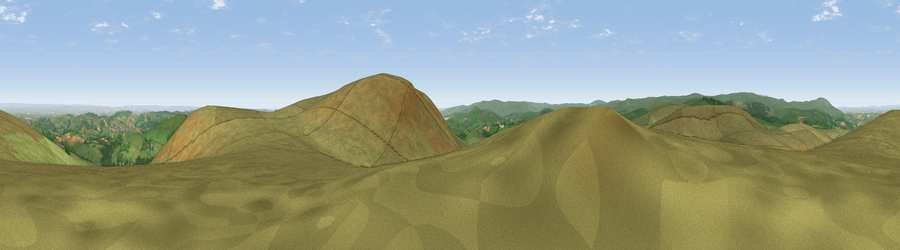

Hookney Tor
#5183 in England · top 8% of its area beats it · near North BoveyThe view, rendered

A 360° render of this exact spot computed from the terrain model, tree cover and land cover — summer colours, afternoon light, calibrated against photographs of famous viewpoints. Real trees, hedges and buildings will differ in detail.
The panorama
Grey silhouette: terrain skyline in each direction (720 bearings, Earth curvature and refraction included). Dashed green: skyline with trees (+15 m) and buildings (+8 m) as obstacles. Blue strip: how far the ground is visible on each bearing.
Where the view opens
Wedge length = distance to the farthest visible ground on that bearing (vegetation-aware). Rings at 10, 25 and 50 km.
What fills the view
92% grassland · 7% woodland · 1% cropland
Angular shares of the visible panorama (visual magnitude), not map area. Landscape diversity 0.14 (0–1 Shannon).
Key numbers
More beautiful places nearby
The staircase of upgrades: each row has a higher view potential than everything closer. Driving times are estimates from straight-line distance, calibrated against real road routing — check an actual route before setting out.
| Place | Direction | Drive | Score |
|---|---|---|---|
| Viewpoint near North Bovey | N · 1 km | ~2 min | 74.8 |
| Viewpoint near North Bovey | ENE · 1 km | ~3 min | 76.3 |
| Viewpoint near Widecombe-in-the-Moor | SSE · 3 km | ~7 min | 76.5 |
| Viewpoint near North Bovey | ENE · 3 km | ~8 min | 79.3 |
| Cairn | ESE · 7 km | ~14 min | 79.8 |
| Viewpoint near Haytor Vale | ESE · 8 km | ~15 min | 80.1 |
| Viewpoint near Buckland in the Moor | SSE · 9 km | ~18 min | 80.7 |
| Viewpoint near Dousland | SW · 18 km | ~31 min | 81.0 |
50.61709, -3.84000 · source: osm peak · position refined by local search. Computed location — check access rights before visiting.